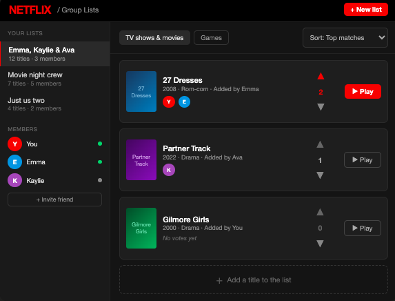
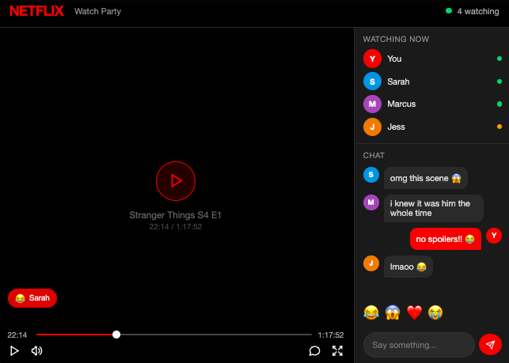
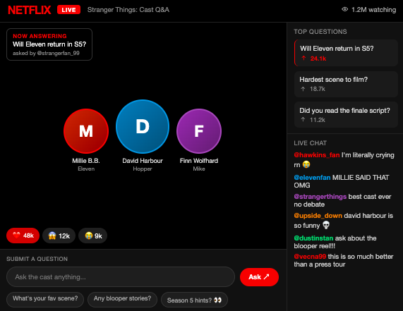

Why Add Social Features?
With over 325 million subscribers and one of the strongest content libraries, Netflix has spent the last decade perfecting its solo viewing experience. From features like autoplay to personalized recommendations, Netflix's design decisions are optimized for one person. But the way people relate to Netflix's content has shifted. Moments from Squid Game and Wednesday get discussed and shared across every social platform except the one where people actually watched them. Netflix is driving cultural conversation without capturing any of it.
The opportunity is clear: social features that bring the conversation back to Netflix. This would serve two business goals simultaneously. First, social features would attract new users through network effects (if your friends are watching together on Netflix then you need Netflix). Second, social features increase engagement among existing users by giving them more reasons to stay on the platform longer.
Who Are These Social Features For?
Before designing anything, it's worth thinking about which users this problem affects the most. Netflix's user base can be segmented in several ways (age, geographic location, viewing behavior, etc.) but the most useful segmentation here is social context. Who are people watching with, and what do they want from that experience?
Three segments stand out:
- Co-watchers are users who already share a viewing experience. This could be couples watching from different cities, friend groups coordinating watch parties over text, or families picking a movie together. Their pain point isn't discovery. It's coordination. They want Netflix to do what they're currently doing manually across other apps.
- Culturally motivated viewers watch to participate in a broader social conversation. They're users posting reactions on apps like Twitter or Reddit. They're engaged with Netflix's content, just not on Netflix.
- Solo viewers are the largest group by volume but the weakest target for social features. They're on Netflix for passive consumption, and adding social friction to their experience risks annoying them without upside.
I believe the right design approach would be to build for co-watchers and culturally motivated viewers with enough optionality that solo browsers can ignore social features entirely.
Features Landscape
To think systematically about the opportunity I have mapped out features across two dimensions: who they serve (solo vs group viewers) and how much they disrupt Netflix's core experience (low vs high disruption).
| Solo Viewer | Group Viewers | |
|---|---|---|
| Low Disruption |
|
|
| High Disruption |
|
|
Three Features Worth Building
1. Synchronized Watchlists
The simplest version of social Netflix is a shared watchlist. Users create a group list, add titles, and can see what their friends have added to the list. No live coordination required, and no changes to the viewing experience itself. It's a pre-watch social layer that solves the problem of "what should we watch".

2. Watch Party with Chat
The more compelling bet is native watch parties: synchronized playback for a group with a collapsible chat sidebar and real-time emoji reactions. This is a feature that Teleparty has proven out. The question is whether Netflix should own it.
Keeping users in a third party app for the social layer means Netflix loses data, engagement time, and the opportunity to deepen the relationship between social interaction and content discovery. A native watch party also enables features that Teleparty can't: reactions that tie to specific timestamps, post-show prompts that redirect the conversation towards Netflix's catalog, and group recommendations based on shared viewing history.
The key design principle here is restraint. The chat sidebar should be collapsible and opt-in so that it never interferes with the solo experience. Emoji reactions that float briefly over the video (rather than cluttering a sidebar) will make the feature feel like watching with friends, not like a chat app that also plays video.

3. Live Cast Q&A Events
The most ambitious idea reimagines Netflix as a live event platform. After a high profile season finale or series premier, Netflix hosts a live Q&A with the show's cast, streamed directly in-app with fans submitting and upvoting questions in real time.
This is not a novel format. YouTube and Instagram Live have all run creator Q&As. What makes it compelling for Netflix is context: the audience is already there and invested in the content. A live cast event immediately after the finale of a show like Stranger Things would capture peak engagement at exactly the right moment.
The upvoted question queue is the most difficult design decision. With millions of viewers, an open chat becomes noisy. A voting mechanism where fans collectively surface the best questions would keep the experience high-quality and scalable while making participation feel meaningful even for users whose questions don't get answered.

The Big Picture
Each of these features targets a different part of the social opportunity. Coordination before watching, connection during, and community after. Together they represent a coherent thesis: Netflix should build a social layer that wraps around the viewing experience without competing with it.
The risk here is to avoid overreach. A Netflix social network through public profiles, follower graphs and activity feeds would solve a problem users don't actually have on a streaming platform. The features worth building are the ones that make watching with others easier and more memorable, not the ones that turn Netflix into another social app competing for attention in an already crowded space.
Netflix's content creates the moment. Social features like synchronized watchlists, watch parties with chat, and live cast Q&A sessions give people somewhere to share them.